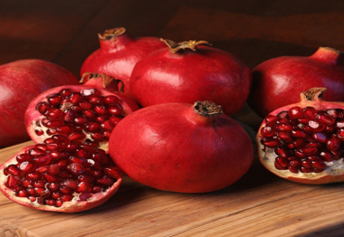

 ডালিমের পরিচিতি ও গুনাগুন
ডালিমের পরিচিতি
ডালিমকে বলা হয় স্বর্গীয় ফল। স্বর্গীয় ফল বলার কারন হচ্ছে, ডালিম আমাদের প্রিয়নবী
মুহাম্মদ (সঃ) এর অতন্ত্য পছন্দের ফল ছিল। নবীজী (স:)
বলতেন, এটা আহারকারীদের শয়তান ও মন্দ চিন্তা থেকে বিরত রাখে।
ডালিমের এর রয়েছে বিভিন্ন রোগ সারানোর জাদুকরী গুণ! ডালিম বা বেদানা ফল মোটামুটি সারা
বছর পাওয়া গেলেও এখন চলছে ডালিমের ভরা মৌসুম। আপেলের মতো ডালিমও রোগীর পথ্য হিসেবে
খুবই জনপ্রিয়।
ডালিমের পুষ্টিগুন
ডালিম ফল হিসেবে খুবই গুণের। বিশেষ করে রোগ সারাতে রোগীর পথ্য হিসেবে ডালিমের জুড়ি
নেই! ডালিমের প্রতি ১০০ গ্রাম খাদ্যযোগ্য অংশে রয়েছে -
খাদ্যশক্তি- ৬৫ কিলোক্যালরি,
জলীয় অংশ- ৭৮ গ্রাম,
চিনি- ১৩.৬৭ গ্রাম,
শর্করা- ১৪.৬ গ্রাম,
চর্বি- ০.১ গ্রাম,
থায়ামিন- ০.০৬ মিলিগ্রাম,
রিবোফ্লেভিন- ০.১ মিলিগ্রাম,
নিয়াসিন- ০.৩ মিলিগ্রাম,
ভিটামিন সি- ১৬ মিলিগ্রাম,
ক্যালসিয়াম- ১০ মিলিগ্রাম,
ফসফরাস- ৩৬ মিলিগ্রাম,
আয়রন- ০.৩ মিলিগ্রাম,
ফোলেট- ৩৮ আইইউ,
ভিটামিন ই- ০.৬ মিলিগ্রাম,
ভিটামিন কে- ১৬.৪ মিলিগ্রাম,
পটাশিয়াম- ২৩ মিলিগ্রাম,
সোডিয়াম- ৩ মিলিগ্রাম,
ম্যাগনেসিয়াম- ১২ মিলিগ্রাম,
জিংক- ০.৩ মিলিগ্রাম.
ডালিমের গুনাগুন
ডালিমগাছের শেকড়, ছাল, ফলের খোসা আমাশয় ও উদরাময়ের ওষুধ হিসেবে ব্যবহৃত হয়।
ডালিমের ফুল ঋতুস্রাবজনিত সমস্যার ওষুধ হিসেবে ব্যবহৃত হয়।
ডালিম ঠান্ডাজনিত রোগ উপশম করে। শ্বাসকষ্ট, কাশি ও বাতের ব্যথা দূর করতে ডালিমের জুড়ি
নেই।
ডালিম অরুচি দূর করে ও খিদে বাড়ায়।
ডালিমের রস বমি বন্ধ করে এবং অনবরত বমির ফলে শরীরে যে ক্লান্তি আসে তা দূর করে।
ডালিমে উপস্থিত ভিটামিন সি ও বি দাঁত এবং মুখের রোগ প্রতিরোধে সহায়তা করে।
ডালিমের আয়রন, ফসফরাস, ক্যালসিয়া ও ফোলেট শরীরে রক্ত তৈরিতে সহায়তা করে।
ডালিমে রয়েছে প্রচুর পরিমাণে অ্যান্টিঅক্সিডেন্ট যা বিভিন্ন ধরনের ক্যান্সার প্রতিরোধে
সহায়তা করে। এছাড়া ডালিম বার্ধক্য বিলম্বিত করতেও সহায়তা করে।
ডালিমের গুণাবলি রক্তের তারল্য ঠিক রাখে এবং হৃদরোগ ও স্ট্রোকের ঝুঁকি কমায়।
ডালিমের রস খুবই ভালো ত্বক পরিষ্কারক। ত্বকের উজ্জ্বলতা বাড়াতেও ডালিমের রস কার্যকর।